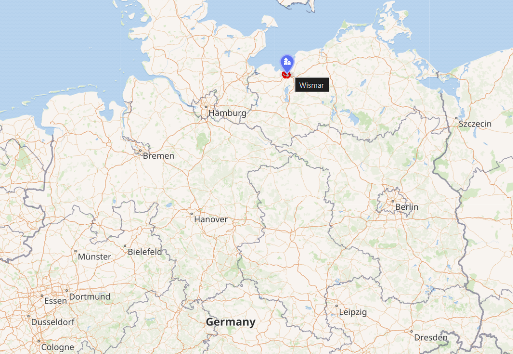
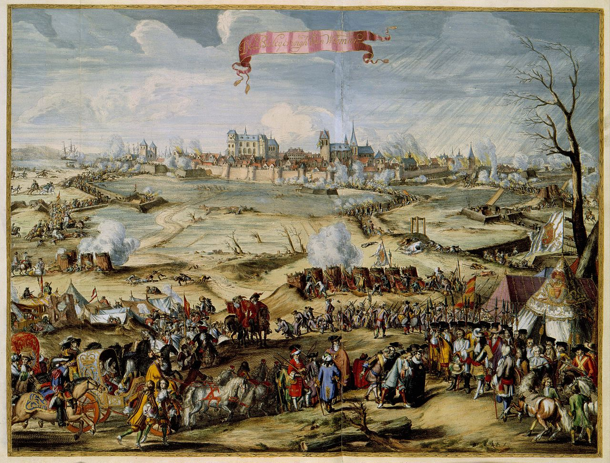
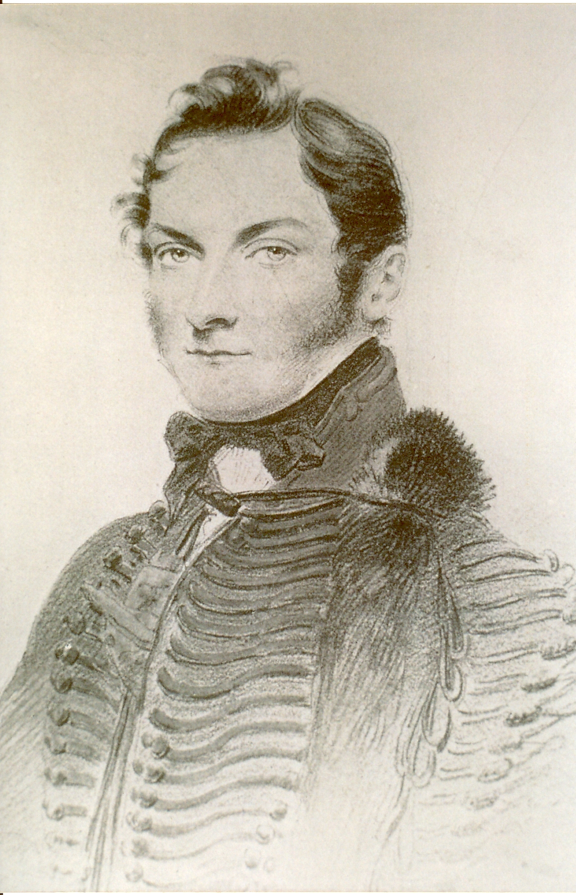
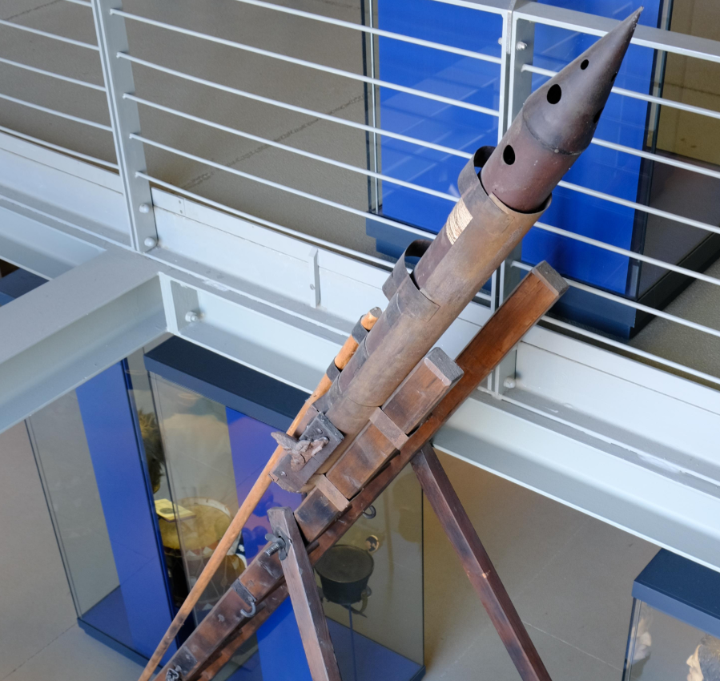
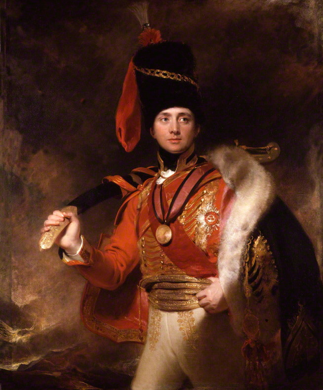
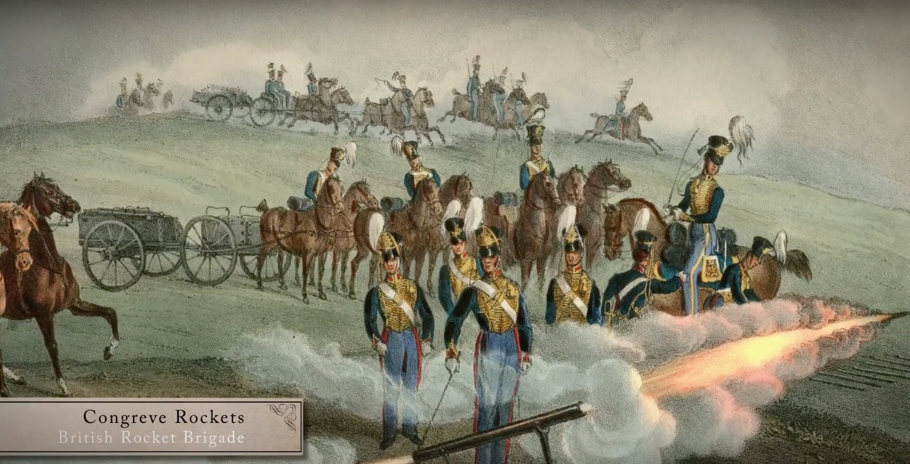
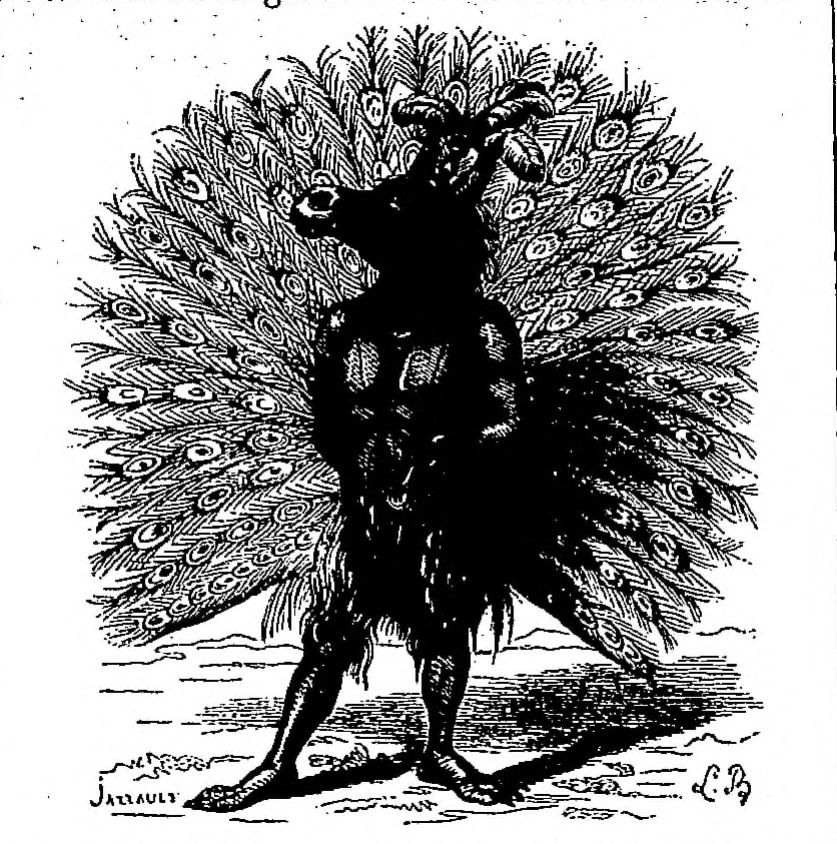

라이프치히 전투 (32) - 유럽 최고 미남의 죽음
게시: 2026-01-26T06:30:09+09:00
1813년 8월 8일, 그러니까 나폴레옹과 연합군 간에 약속된 휴전 기간이 끝나기 2일 전, 여태까지 이베리아 반도에서만 싸울 뿐 나폴레옹 전쟁의 주무대이던 독일 지역에는 병력을 파견하지 않았던 영국군이 드디어 함부르크 바로 동쪽인 비스마(Wismar)에 상륙했습니다. 나폴레옹 체제에 저항하여 연합군 최후의 병사 1명이 쓰러질 때까지 싸우자고 가장 크게 외치면서도 얌체처럼 돈과 물자만 보낼 뿐 병력은 파견하지 않던 영국이 드디어 1개 여단의 지상군을 보낸다고 하니 연합군에서는 기대가 꽤 컸습니다. 그러나 정작 상륙한 영국군은 달랑 140명 정도였습니다. 그게 로열 로켓 여단(Royal Rocket Brigade) 전체 병력이었습니다. 전에 언급한 대로, 프로이센군이나 러시아군과는 달리 영국군에서는 대포 6문으로 구성된 1개 포대(battery)를 '여단'이라고 불렀기에, 1개 포병 여단의 병력 수는 대략 140명 정도였던 것입니다.

(비스마의 위치입니다. 당시 함부르크와 뤼벡은 강철의 원수 다부가 점령한 상태였기 때문에, 영국은 훨씬 작은 항구 도시인 비스마를 통해 병력과 물자를 하역했습니다. 그럼에도 불구하고, 저렇게 바다를 장악하고 있다는 것이 전쟁 수행에 있어서 얼마나 유리한지 잘 보여줍니다.)

(이 그림은 1675년 스웨덴-브란덴부르크 전쟁 당시 브란덴부르크의 연합군이던 덴마크군의 포위 공격을 받고 있는 비스마의 모습입니다. 비스마는 원래 한자 동맹 도시로서, 작지만 무역과 양털 가공을 통해 나름 부유했던 도시였습니다. 그러다 30년 전쟁을 마무리 짓는 1648년의 베스트팔렌 조약으로 비스마는 스웨덴에 귀속되었고, 그 상태가 지속되다 1803년에 다시 독일계인 메클렌부르크(Mecklenburg) 대공에게 매각되었습니다. 이후 나폴레옹의 라인연방에 반강제로 합류했지요.) 더욱 실망스럽게도 자신들이 1개 포병 여단이라고 주장하는 일단의 영국군은 정작 번쩍번쩍 빛나는 대포 대신, 탄약차(caisson)처럼 생긴 짐마차들만 잔뜩 들고 수송선에서 내렸습니다. 다만 그들의 지휘관은 그럭저럭 볼 만했습니다. 그는 영국의 실질적 최고 권력자인 섭정 왕세자(Prince Regent, 훗날의 조지 4세)의 친구이자 당대 유럽 최고의 미남 중 하나라는 소문이 돌 정도로 잘 생긴 남자였기 때문이었습니다. 그 지휘관은 리처드 보그(Richard Bogue) 대위였습니다. 이 영국 로켓 여단은 연합군 중에서도 당연히 북부 방면군에 배속되었으며, 그 최고 사령관인 베르나도트는 훗날 노르웨이를 손에 넣기 위해서라도 영국에게 잘 보이려 노력하던 편이었으므로, 보그 대위와 그의 로켓 여단을 자신의 직속 스웨덴 근위대에 배속 시켰습니다. 어차피 140명으로 구성된 병력이 전체 전황에 큰 영향을 미치기도 어려웠고, 또 베르나도트 본인도 병력이 부족한 스웨덴군을 아끼고 아끼던 편이었으므로, 영국도 어렵게 파견한 이 자그마한 지상군이 큰 사상자를 내는 것을 달가와하지 않을 거라고 생각했기 때문이었습니다. 다만 그 중 일부는 베르나도트의 사령부로 이동하는 도중에, 지난 편에서 언급한 괴르더(Göhrde) 전투에 참전하여 첫 실전을 기록하기도 했습니다. 생각해보면 기본적으로 로켓은 대포보다도 더 긴 사거리를 가진 장거리 무기였으므로, 실전에 참전한다고 해도 사상자가 날 것 같지는 않았습니다.

(리처드 보그 대위의 초상화입니다. 이게 정말 유럽 최고의 미남일까요? 글쎼요...) 보그 대위는 이렇게 '영국분들을 다치게 해서는 안돼'라는 베르나도트의 배려에 따라 안전한 사령부에만 머물러 있을 뻔했으나, 그에게는 나름대로 야망이 있었습니다. 당시 그는 31세였는데, 30대 장군이 즐비하던 유럽 군대에서 그 나이에 대위라는 것은 아무 배경이 없는 사람으로서 귀족 출신이라고 해도 하급 귀족이라는 뜻이었습니다. 실제로 보그는 군의관의 아들로서, 평민 출신이었습니다. 그가 섭정 왕세자의 친구라는 소문은 당연히 잘못된 것이었고, 나름 밀덕이었던 섭정 왕세자가 신무기인 로켓에 대해 관심이 있었으므로 섭정 왕세자를 만날 기회가 있었다는 소리에 불과했습니다. 특히 돈을 주고 계급을 사는 매관매직 제도(purchase system, 이에 대해서는 https://nasica-old.tistory.com/6862454 참조)가 공식적으로 있던 영국 육군에서도 포병 장교는 기술 병과라서 예외적으로 매관매직이 적용되지 않았습니다. 그래서서 애초에 귀족들은 포병 병과를 택하지 않았고, 영국 포병 장교들은 기본적으로 계급도 낮고 다들 나이가 계급에 비해 많은 편이었습니다. 그런 포병 대위였던 보그가 출세할 길은 딱 하나, 실전에서 빛나는 전공을 세우는 것이었습니다.

(독일 라이프치히 전투 기념관에 전시된 콘그리브 로켓 모형입니다. 자세히 보면 점화장치로 머스켓 소총처럼 부싯돌과 점화접시가 달려있는 것이 보입니다.)
그러나 보그 대위에게는 기회가 좀처럼 오지 않았습니다. 여태까지 보셨듯이, 베르나도트가 의도적으로 전투를 회피했기 때문이었습니다. 그러다 드디어 베르나도트도 포성이 울리는 라이프치히로 달려가게 되었으니, 보그 대위가 얼마나 설렜을지 짐작이 갑니다. 그는 베르나도트의 선봉장이던 빈칭게로더 장군에게 실전에 로켓 여단이 참전하게 해달라는 요청을 했고, 빈칭게로더는 어차피 원거리에서 쏘아대는 로켓 부대가 큰 위험에 처할 것 같지는 않다는 생각에, 그 요청을 승인했습니다. 영국 대사로서 현장에 있었던 스튜어트(Charles Stewart) 장군의 부관으로서 역시 현장에 있었던 존스(John Jones) 중위가 나중에 보그 대위의 장인에게 보낸 편지에 따르면, 보그가 파운스도르프 마을로 접근하여 정확하고 무자비한 로켓 포격을 퍼붓자, 그 마을을 점령하고 있던 적군 5개 대대는 이 신무기의 위력에 질려 버려 불과 200명도 되지 않는 이 로켓 여단에게 항복했습니다. 보그는 이에 만족하지 않고, 도망치는 나머지 적군들을 추격하여 서쪽으로 수 km 떨어진 젤러하우젠(Sellerhausen, 존스의 편지에는 Sommerfeld라고 잘못 씀)까지 진격했는데, 그만 거기서 적군의 머스켓 총탄이 그의 양미간을 관통하는 바람에 전사했습니다.

(이미 여러 번 설명드린 바 있는 제3대 런던데리 후작(Marquess of Londonderry)인 찰스 스튜어트입니다. 이 초상화는 1812년, 그가 34세일 때 그려진 것으로서 Thomas Lawrence의 작품입니다. 보그는 31세에 대위였는데 스튜어트는 32세 때 소장이 되었습니다. 그의 성품에 대해서는 전에 썼던 https://nasica1.tistory.com/883 을 참조해주시면 고맙겠습니다. 성품은 그렇게 개차반이라고 해도, 능력은 좋았을까요? 그는 이베리아 전장에서 웰링턴 공작의 부관으로 있었으며 전투에서도 몇몇 공적을 세운 것으로 나옵니다만, 그는 1812년에 그 자리를 사임했습니다. 공식적인 이유는 건강 악화였으나, 사람들은 웰링턴이 그를 해고한 것이라고 했습니다. 웰링턴은 그에 대해 용기 있는 군인이지만 참모로서는 "한심한 사고뭉치(sad brouillon)이자 트러블메이커"로 평가했다고 합니다.)
존스 중위와 함께 역시 현장에 있었다고 주장한 스튜어트 장군 본인은 약간 다른 버전의 보고서를 제출했습니다. 베르나도트는 프로이센군을 대포밥으로 내세우기 위해 빈칭게로더의 러시아군 대신 뷜로의 프로이센 제3군단을 선봉으로 삼았다는 이야기는 전편에서도 언급했었지요. 뷜로가 프로이센 보병과 포병을 앞세워 파운스도르프의 적군을 압박했고, 결국 버티지 못한 적군은 보병 방진(square)를 짠 채 마을에서 철수하기 시작했습니다. 그때 프로이센 포병대의 좌익을 이루고 있던 보그의 로켓 여단이 철수하는 적군의 보병 방진에 로켓을 퍼부었습니다. 무시무시한 불꽃과 연기, 소음을 동반한 이 신무기에 놀란 적군은 얼마간 버티다 결국 항복했는데, 적군이 항복하기 직전에 안타깝게도 보그 대위는 머리에 총상을 입고 전사했다는 것입니다. 뷜로의 참모로서 역시 현장에 있었던 보이엔(Hermann von Boyen) 대령은 또 약간 다른 버전의 기록을 남겼습니다. 프로이센군은 파운스도르프의 적군과 약 1시간 정도 포격전을 벌였는데, 그러던 중 약 2~3개 대대의 적군이 마을로부터 출격하여 좀 떨어진 곳의 스웨덴군 쪽으로 진격을 시작했습니다. 여기에는 영국 로켓 여단이 배치되어 있었습니다. 보그 대위는 전진해오는 적군이 접근하기를 기다리지 않고 오히려 전진했습니다. 괴르더 전투에서 얻은 실전 경험에 근거하여 원거리가 아닌 가까운 거리에서 로켓 포격을 퍼붓고자 했던 것입니다. 그러나 너무 지나치게 접근했는지, 영국 로켓 부대가 포격을 시작하기도 전에 적군의 머스켓 사격이 시작되었고, 거기에 보그 대위가 그만 전사하고 말았습니다. 하지만 로켓 부대는 보그의 부관이던 스트랭웨이즈(Strangways) 중위의 지휘 하에 침착하게 로켓을 발사했습니다. 여태까지 단단한 대오를 이루어 전진하던 적군은 이 로켓 사격을 받고는 완전히 혼비백산하여 개미떼처럼 흩어져 다시 마을로 줄행랑을 쳤으며, 이 모습을 본 프로이센군은 모두 크게 웃었다고 합니다.

(콘그리브 로켓의 심리적 효과에 대해서는 모두가 입을 모아 극찬했습니다. 그러나 웰링턴 공작은 그 부정확성 때문에 매우 부정적이었고, 로켓에 대해 '비문명국 군대 또는 제대로 훈련이 되지 않은 오합지졸들 상대로나 효율적인 무기'라고 평가했다고 합니다.)
프로이센군 소속 군의관이던 벤첼 크리머(Wenzel Krimer) 박사는 보그 대위에 대해서는 언급이 없지만, 역시 로켓 여단의 활약을 목격했고 그에 대해 아래와 같이 몹시 못마땅하다는 듯한 기록을 남겼습니다. "여기서 나는 콘그리브 로켓의 끔찍한 효과를 실감했다. 그 공포와 혐오감은 나만 느낀 것이 아니었다. 저런 아드람멜락(Adramelach)이 발명한 것 같은 사악한 물건들을 추가하지 않아도 이미 우리에겐 죽음의 도구들이 충분하지 않은가? 우리는 평평한 고지에 서 있었기에 적군 진영 상당 부분을 내려다 볼 수 있었다. 우리 앞에는 바로 그런 악마 같은 로켓 포대가 있었다. 로켓이 발사되어 쉭쉭 소리를 내며 날아가 적군의 대오에서 폭발할 때마다, 그 줄의 적군 전체가 쓰러지는 것을 볼 수 있었다. 그렇게 쓰러진 적병들은 불에 그슬리고 박살이 난 시신이 되어 첩첩이 쌓였다. 처음에는 프랑스군도 이 신무기에 익숙하지 않아서, 그 충격을 견디어 내는 듯했다. 그러나 로켓이 얼마나 파괴적인지, 그리고 거기에 당한 희생자들이 어떻게 끔찍한 모습으로 죽는지 보고 난 뒤에는 로켓 추진제 불꽃 하나가 근처에 떨어지기만 해도 혼비백산하여 흩어졌다. 로켓 하나가 자기들 방향으로 날아오는 것만 봐도, 적군 대오 전체가 모든 것을 내버리고 도망쳤다."

(아드람멜락(Adramelach, Adrammelech, Adramélekh)이란 셈(Semite)족 계열의 신으로서, 어원은 '위대한 왕' 정도의 뜻이라고 합니다. 성서 열왕기하편에 매우 안 좋은 의미로 등장합니다. "아와 사람들은 닙하스와 다르닥을 만들었고 스발와임 사람들은 그 자녀를 불살라 그들의 신 아드람멜렉과 아남멜렉에게 드렸으며" (열왕기하 17:31). 이 그림은 19세기 프랑스의 오컬트 작가인 드 플랑시(Collin de Plancy)의 지옥백과(Dictionnaire Infernal)에 나오는 아드람멜렉의 모습입니다. 보통 악마는 '공작새'의 모습으로 묘사되는데, 여기서는 공작+당나귀의 모습이네요.) 실은 여기서 중요한 것은 보그 대위가 어떤 상황에서 전사했느냐 하는 부분이 아닙니다. 위에서 영국인들은 모두 '적군이 로켓 여단에게 항복했다'라고 기록했고, 프로이센인들은 적의 항복에 대해서는 아예 이야기를 안 하고 있다는 부분입니다. 진실은 무엇이었을까요? 결론부터 이야기하면 대규모 항복이 일어났습니다. 그러나 그게 꼭 로켓 떄문만은 아니었고, 또 프랑스군이 항복한 것도 아니었습니다. Source : The Life of Napoleon Bonaparte, by William Milligan Sloane Napoleon and the Struggle for Germany, by Leggiere, Michael V With Napoleon's Guns by Colonel Jean-Nicolas-Auguste Noël https://www.britannica.com/event/Napoleonic-Wars/Dispositions-for-the-autumn-campaign http://www.historyofwar.org/articles/campaign_leipzig.html https://warhistory.org/@msw/article/leipzig-battle-of-the-nations https://www.encyclopedia.com/history/encyclopedias-almanacs-transcripts-and-maps/leipzig-battle-0 https://warfarehistorynetwork.com/article/death-knell-for-napoleons-empire/ https://en.wikipedia.org/wiki/Congreve_rocket https://www.theobservationpost.com/blog/?p=618 https://www.britishempire.co.uk/forces/rhamountedrocket.htm https://en.wikipedia.org/wiki/Richard_Bogue https://en.wikipedia.org/wiki/Wismar https://en.wikipedia.org/wiki/Adrammelech https://en.wikipedia.org/wiki/Charles_Vane,_3rd_Marquess_of_Londonderry https://www.reddit.com/r/ArtefactPorn/comments/qu3og0/congreve_rocket_as_used_in_the_1812_battle_of_the/